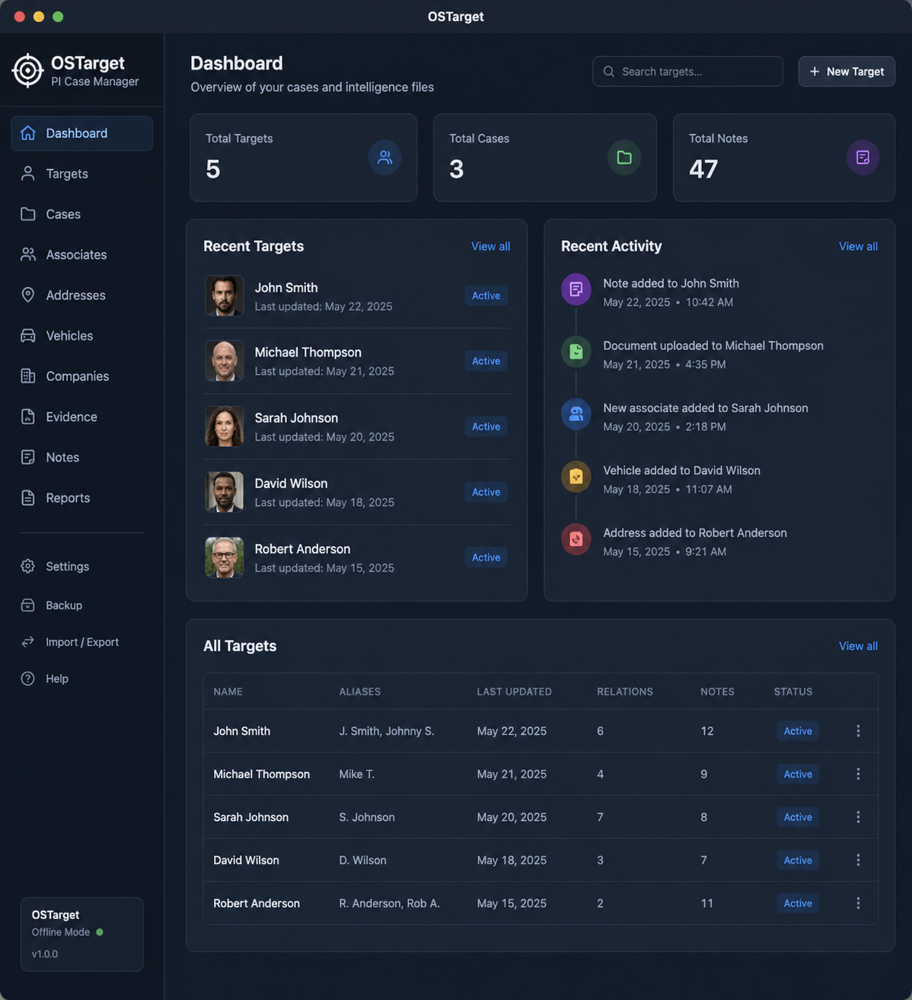

OSTarget is a professional investigative case management platform being developed for private investigators, process servers, compliance teams, corporate investigators, legal professionals, and organizations that require secure, timestamped, audit-ready records.
Request Information ```
Early OSTarget development preview. Features and interface subject to change during development.
```